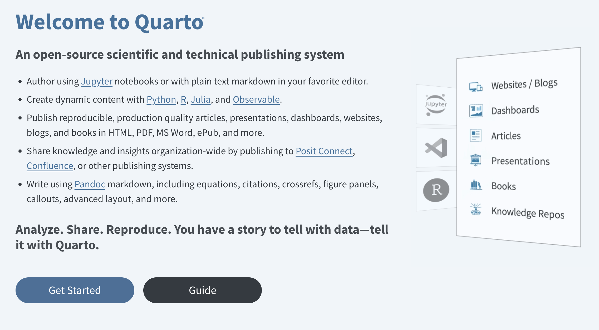
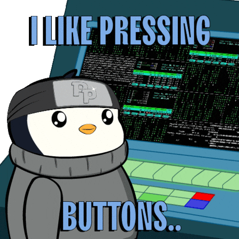
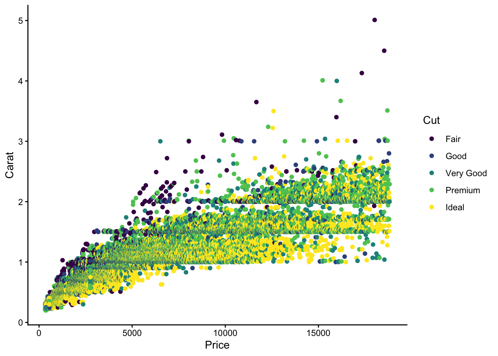

4 A not so short introduction to Quarto
This part gives a not so short introduction to Quarto. This introduction is based on the quarto.org website. Most sub-sections provide the hyperlink to the respective Quarto sub-website.
If you are familiar with RMarkdown (Allaire et al., 2025) the FAQ for RMarkdown Users might be interesting for you.
4.1 What is Quarto?

In short, Quarto is a versatile publishing system that allows you to create reports while integrating code and its output. Quarto is based on Pandoc which is a universal document converter that transforms files from one markup format into another (e.g., Markdown → HTML or Markdown → PDF).
see https://pandoc.org/ for more information on Pandoc
This means that with Quarto you can create different types of documents, including:
For an overview about all document types see quarto.org/docs/guide/
- regular reports,
- presentations (e.g., PowerPoint, Beamer, Reveal.js),
- websites (e.g., regular websites, blogs),
- books, and
- interactive components (e.g., dashboards, Shiny apps),
while speaking only one language: Markdown1.
Depending on the document type, you can use different output formats (e.g., HTML, PDF, MS Word, Markdown).
An overview about all formats can be found at https://quarto.org/docs/output-formats/all-formats.html
4.2 How to work with Quarto?
Working with Quarto is basically the same as working in a regular R-script, except that your file has the extension .qmd (instead of .R) and needs the following components:
- YAML header,
- body, and
- Code chunks for code execution.
First, create a dedicated folder (e.g., quarto_intro).
4.3 The YAML header
The YAML header is enclosed by three dashes (---):
YAML is an acronym for Yet Another Markup Language see https://en.wikipedia.org/wiki/YAML
4.3.1 Overview of YAML syntax
The basic syntax of YAML uses so-called key-value pairs in the format key: value. This is powerful, because you can generate great documents like this Quarto book with only a few lines of code in the YAML header. Some useful key-value pairs are the following:
- Check out quarto.org and identify useful
key: valuepairs. It is important to note that there are sometimes differentYAMLoptions for the formats: - Add them to your YAML header.
4.3.2 Bibliography and Citation Style
With Quarto it is possible to automatically generate citations and bibliographies in many different ways. The key: value pair to include a reference list in Quarto is:
bibliography: r-refs.bibHere we use a so-called BibLaTex (.bib) file. These files can be generated with the most reference management software programs (e.g., Citavi, EndNote, zotero, …).
A reference in the .bib-file looks like this:
- Save (some of the) R packages in a character vector.
- Use the
write_bib()function from theknitrpackage (Xie, 2025).
It is important to note that .bib file needs to be in the same folder as the .qmd file, otherwise you need to provide the path to the .bib file.
To change the citation style (e.g., APA, Chicago Manual of Style), we use the csl key:
CSL is the abbreviation for Citation Style Language (for more see https://en.wikipedia.org/wiki/Citation_Style_Language)
The apa.csl file can be found on github: https://github.com/citation-style-language/styles.
csl: apa.cslThe citation syntax (i.e., how to cite the references in the text) is explained in the subsection Citation syntax.
4.3.3 Execution/Output options
For an overview of (chunk) options see quarto.org/docs/computations/execution-options.
To customize code execution or output behavior, the options can be specified either:
- globally (see in the following) or
- per code block (see the section on Chunk options)
In the following example, we set echo: false and warning: false.
execute:
echo: false
warning: falseThis means that no code and no warnings are shown in the entire document unless you explicitly override these settings in a specific code block.
4.4 The body
When the YAML header is set up, we can work on the body of the document. In the body, we write the text and include the code chunks. The body can be structured with headings, lists, images, tables, and so on. To do this, we use the Markdown language2 which is lightweight markup language with plain-text formatting syntax.
4.4.1 Markdown language
There are plenty of different guides to get a quick overview about the language (see e.g., markdownguide or Quarto-website). The following code snippets are copied and sometimes slightly adjusted from quarto.org.
4.4.1.1 Text formatting
| Markdown Syntax | Output |
|---|---|
|
italics and bold |
|
superscript2 / subscript2 |
|
|
|
verbatim code |
4.4.1.2 Headings
To create headings, add one (or more) # in front of the heading.
| Markdown Syntax | Output |
|---|---|
|
Header 1 |
|
Header 2 |
|
Header 3 |
This goes up to level 6 (i.e., ######) which probably is not recommended to use though.
4.4.1.3 Lists
| Markdown Syntax | Output |
|---|---|
|
|
|
|
More example on how to create lists can be found here https://quarto.org/docs/authoring/markdown-basics.html#lists
4.4.2 Cross-referencing
Cross-referencing is a useful feature to reference headings, figures, tables, equations (called objects in the following), etc within a Quarto project. To make an object referenceable, we need to provide unique identifiers for the respective object. Identifiers must start with their type (e.g., #fig-, #tbl-, #eq-), except for headings.
For more on cross-referencing see https://quarto.org/docs/authoring/cross-references.html.
This is done by adding a label in curly braces {} after the object or section. The label needs to start with the type of the object (e.g., #fig- for figures, #tbl- for tables, #eq- for equations), except for headings where the label can be freely chosen.
When we want to cross-reference the Images section, we have to provide unique identifier that is enclosed by braces {} (here: #include-images) after the heading:
## Images {#include-images} An example on how to cross-reference figures is shown in the Images section.
4.4.3 Images
The Markdown way to include images is as follows:
{#fig-pinguin}The caption [A pinguin who likes pressing buttons] and label {#fig-pinguin} makes the figure referenceable. To reference it, use the following syntax:
See https://quarto.org/docs/authoring/figures.html for more.
See @fig-pinguin for a pinguin who likes pressing buttons.This renders to:
See Figure 4.1 for a pinguin who likes pressing buttons.

For example, the include_graphics function from the knitr package (Xie, 2025):
It is made referenceable via the label: fig-demo-include.
4.4.4 Citation syntax
Recall a reference in the .bib-file looks like this:
For more on the citation syntax see the Pandoc User Guide.
For example, to cite R, we need to use @ before the so-called BibLaTex key R-base. Three example follow:
-
[@R-base]renders as: (R Core Team, 2025) -
@R-baserenders as: R Core Team (2025) -
[-@R-base]renders as: (2025)
Multiple citations are separated by semicolons:
-
[@R-base; @R-knitr]renders as: (R Core Team, 2025; Xie, 2025)
4.4.5 There is a lot more!
Technical writing (e.g., Equations): Use
$delimiters for inline math and$$delimiters for display math (see https://quarto.org)-
Links:
-
[This is a link to google.de](www.google.de)which appears as This is a link to google.de -
<https://quarto.org>which appears as https://quarto.org
-
Videos
…
4.5 Computations
4.5.1 R code blocks (or chunks)
Within a Quarto document source code can be displayed by using ``` at the start and the end of the code. The starting ``` are followed by braces around the programming language (e.g., ```{python}). R code is included by using curly braces around the letter r (i.e., ```{r})
This looks like this:

Keyboard shortcuts:
Windows: Shift-Control-IShift-Control-I
Mac:
4.5.2 Chunk options
What are chunk options? Chunk options customize the output of the code blocks. In Quarto it is recommended3 to include the chunk options as special comments (i.e., |#) at the top of the chunk.
In the following example, we set output: false…
… and hence, no output is shown.
The most common chunk options are:
| Chunk option | Description | Value |
|---|---|---|
echo |
Include the source code in output | tr ue/false/fenced |
eval |
Evaluate the code chunk. If false the code of the chunk will not be executed, but depending on the echo value be displayed or not. |
true/false |
include |
Include source code &(!) results in the output. | true/false |
results |
Should results be displayed in the output or not (false)? If yes how (markup vs. asis)? |
ma rkup/asis/hold/ hide/false
|
warnings |
Include warnings in output. | true/false |
4.6 Rendering
There are multiple ways to render a Quarto document:
Clicking the Render (RStudio) / Preview (Positron) Button or using keyboard shortcuts (windows: Ctrl-Shift-KCtrl-Shift-K, mac: )
-
Using the terminal
quarto render script.qmd --to htmlquarto render script.qmd --to pdf- …
Using the
quarto_render()function from thequarto(Allaire & Dervieux, 2025) package
When rendering a Quarto document, all code chunks are executed (except you stated: eval: false). This means whenever your code fails, the rendering process will fail, too. Moreover, long-running code (e.g., simulations) should be done in a separate session, and the results should be saved (e.g., as .rds file). Then, in the Quarto document, you can import the results (e.g., with readRDS()) and process them (e.g., create tables or figures).
A brief introduction to the Markdown language can be found in the Markdown language section below.↩︎
It is also possible to use
LatexorHTMLsyntax. However, you most likely run into problems when rendering into the respective other type.↩︎The
rmarkdownsyntax is different (e.g.,{r my-label, echo = FALSE}), but it also works inQuarto.↩︎